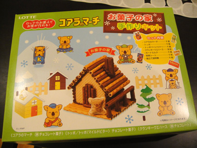
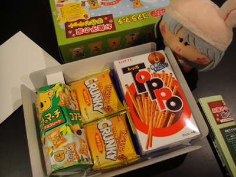
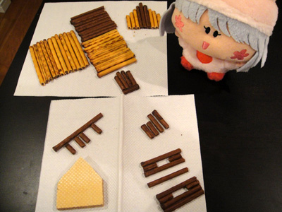
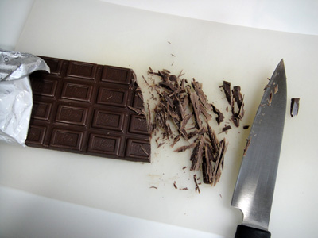
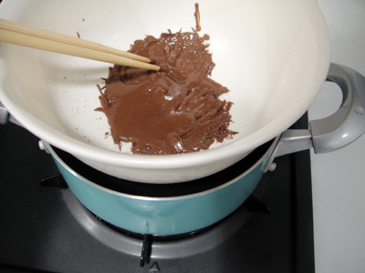
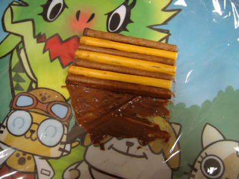
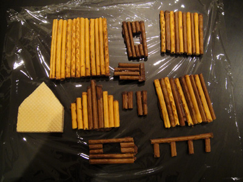
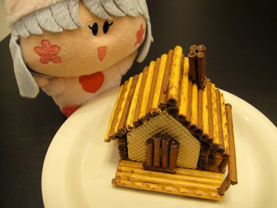
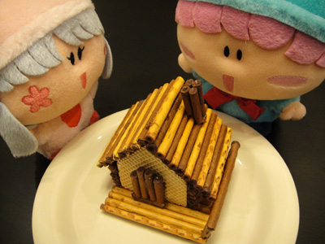

お菓子と言えば妖精、妖精と言えばお菓子ですね。ネタになるのか微妙ですが、ロッテのお菓子で作る『お菓子の家 手作りキット』に挑戦してみました。
パッケージの写真のようなお菓子の家は果たして作れるのか？
それでは写真とともに、苦戦の模様をレポいたします(^◇^;)。

写真のようなお菓子の家は果たして作れるのか？

パピィ「今回はわたちが挑戦しまちゅ！」
中には↓が入ってます。
・コアラのマーチ １箱
・トッポ １箱
・トッポ（マイルドビター） １箱
・クランキーウエハース ２枚
・ガーナミルク １箱
・背景シート １枚
・組立て説明書 １枚

トッポを決められた長さに切って部品を作っていきます。
ここの正確さが完成度を左右すると思います。

湯煎のために板チョコを細かく刻みます。

刻んだチョコを湯煎にかけて、どろどろになるように溶かします。
温度が下がるとすぐに固くなるので、
頻繁に温め直すのが大変。。。

溶かしたチョコを接着剤代わりにして
トッポをくっつけていきます。
冷蔵庫で冷やすとチョコが固まってしっかりくっつきますが、
チョコをたっぷり付けないと強度がつかない！

やっとすべてのパーツが出来上がりました。
もうこの時点でくたくた・・・。

あとはパーツをチョコでくっつけてできあがり！
パピィ「さぁムルモに自慢しなきゃね」

ムルモ「ほぇ、これホントにパピィが作ったんでしゅか！？」
パピィ「どう？あまりに上手でびっくりしたでちょ？」
ムルモ「確かによく見ると屋根ががたがただし、
柵も傾いていたりと、
ところどころパピィらしいでしゅね」
パピィ「な、なんでちゅってーーっ！？」
細かい作業が多くて、完成まで２時間半もかかりました・・・。
作ってみての感想は、「もう二度とやりたくない…」でしょーか。
でも、一人でも多くの方にこの「お菓子の家」作りに挑戦して欲しいです。
皆さんもお店でキットを見かけたら、ぜひ挑戦してみてください！
たぶん上のパピィ作より完成度が高いお菓子の家が出来るはずですよ～。
(2011/12/4)